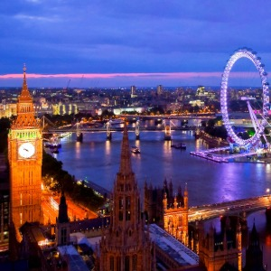

Home
Serviços: A nossa empresa oferece diferentes planos, pacotes e preços. Seja para viagens a trabalho ou lazer.
Para você que trabalha com muitas viagens em diferentes destinos
* 3 Viagens de ida e volta no âmbito nacional, Valor:X
Para você que busca fazer mais de uma viagem internacional seja a trabalho ou lazer:
- X viagens no ano X% de desconto e aumentando sucessivamente
Para você que não pretende sair do pais temos uma promoção parecida com a acima
- X Viagens no ano X% de desconto e aumentando sucessivamente

LONDRES
- Explore os marcos icônicos, como o Palácio de Buckingham, a residência oficial da monarquia britânica.
- Visite a imponente Torre de Londres, conhecida por sua história medieval e as Joias da Coroa.
- Passeie pelo Museu Britânico para admirar uma vasta coleção de artefatos e antiguidades de todo o mundo.

PEQUIM
- Caminhe ao longo da majestosa Grande Muralha da China, uma das maravilhas arquitetônicas mais impressionantes do mundo.
- Explore a grandiosidade da Cidade Proibida, antiga residência imperial chinesa e um exemplo magnífico de arquitetura tradicional.
- Delicie-se com a culinária autêntica de Pequim, incluindo o famoso Pato à Pequim e outras iguarias locais.
HOLLYWOOD
- Faça um tour pelos famosos estúdios de cinema de Hollywood para conhecer os bastidores da produção cinematográfica.
- Passeie pela icônica Calçada da Fama, onde as estrelas de cinema deixam suas pegadas e autógrafos.
- Absorva a energia vibrante de Hollywood Boulevard, repleta de lojas, restaurantes e vida noturna emocionante.
MALDIVAS
- Relaxe em praias paradisíacas de areias brancas e águas cristalinas, perfeitas para mergulho e snorkeling.
- Hospede-se em luxuosos resorts sobre a água, onde você pode desfrutar de vistas deslumbrantes do oceano e acesso direto à vida marinha.
- Explore os recifes de coral coloridos e a diversificada vida marinha em mergulhos guiados ou passeios de barco com fundo de vidro.

BUENOS AIRES
- Descubra a vibrante cultura argentina através da dança do tango em milongas tradicionais ou em apresentações de rua na Calle Florida.
- Delicie-se com a culinária local em parrillas (restaurantes de churrasco) e cafés históricos, enquanto saboreia um delicioso bife argentino e um mate quente.
- Explore os bairros charmosos de Buenos Aires, como San Telmo, conhecido por suas ruas de paralelepípedos e feiras de antiguidades, e La Boca, famoso por suas casas coloridas e artes de rua.
PARIS
- Maravilhe-se com a arquitetura icônica de Paris, visitando a Torre Eiffel, o Arco do Triunfo e a Catedral de Notre-Dame.
- Passeie pelas charmosas ruas de Montmartre, onde artistas como Picasso e Van Gogh encontraram inspiração, e desfrute das vistas panorâmicas do bairro do alto da colina.
- Explore os famosos museus de Paris, como o Louvre, lar da Mona Lisa, e o Musée d'Orsay, conhecido por sua coleção impressionista.